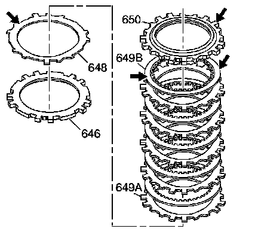
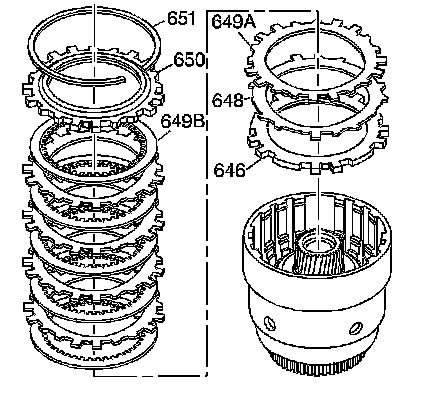

Forward Clutch Assembly Assemble
Forward Clutch Assembly Assemble

1. Inspect the forward clutch waved plate (648), the apply plate (646), the fiber plate assemblies (649B), the steel plates (649A) and the selective backing plate (650) for the following conditions:
^ Damaged tangs
^ Delamination
^ Excessive wear
^ Heat damage
^ Flatness
^ Surface finish damage
^ Burrs and nicks

2. Install the forward clutch apply plate (646).
3. Install the forward clutch waved plate (648).
4. Install the forward clutch steel plates (649A) and alternate with the fiber plate assemblies (649B).
5. Install the forward clutch selective backing plate (650).
6. Install the forward clutch backing plate retainer ring (651).